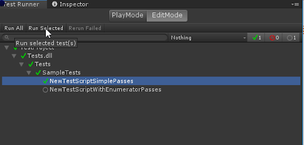
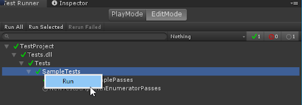

Workflow: How to run a test¶
To run a test, you need to double-click on the test or test fixture name in the Test Runner window.
You can also use one of the buttons on the top bar, Run All or Run Selected. As a result, you’ll see the test status icon changed and a counter in the top right corner updated:

You may also use a context menu option Run, right-click on any item in the test tree to have it (with all its children if any) run.

Run tests within Rider¶
It is possible to run unit tests in the Unity Test Framework directly from JetBrains Rider.
For more information, see the JetBrains official documentation and their blog post Run Unity tests in Rider 2018.1.